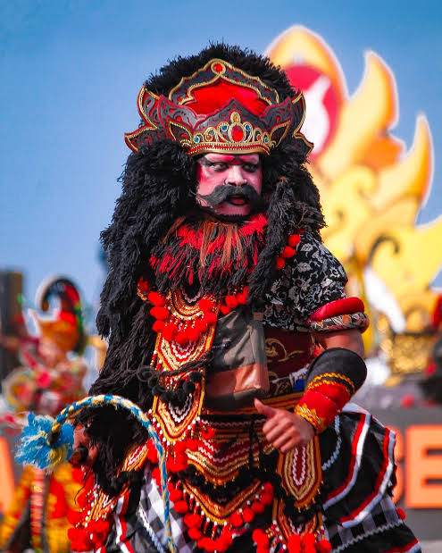
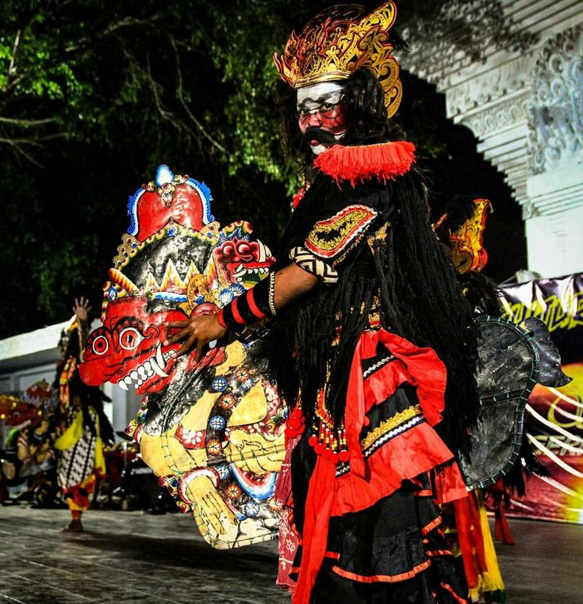
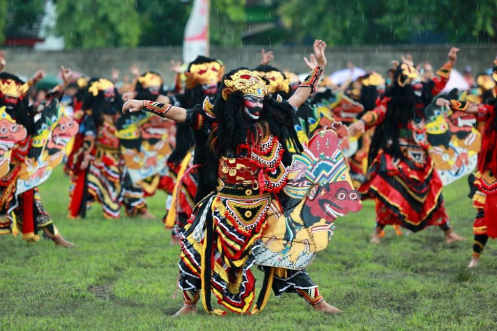
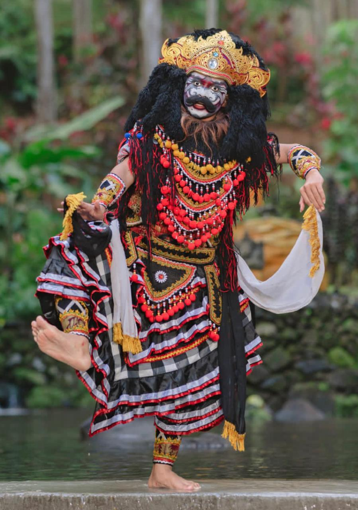

📜 Sejarah
Jaranan Buto merupakan kesenian tari tradisional khas Banyuwangi yang berasal dari Dusun Cemetuk, Kecamatan Cluring. Kesenian ini berkembang sekitar tahun 1960-an sebagai hasil perpaduan budaya Osing Banyuwangi dan budaya Jawa Mataraman.
Nama "Jaranan" berasal dari properti kuda kepang yang digunakan dalam pertunjukan, sedangkan "Buto" berarti raksasa. Hal ini terlihat dari bentuk kuda kepang yang berukuran besar dan menyerupai sosok raksasa.
Hingga saat ini, Jaranan Buto masih dilestarikan dan sering ditampilkan dalam berbagai festival budaya maupun acara masyarakat Banyuwangi.
💭 Makna Filosofis
Jaranan Buto mengandung nilai-nilai kehidupan yang penting bagi masyarakat. Kesenian ini melambangkan keberanian, kekuatan, kerja keras, dan semangat pantang menyerah.
💪 Keberanian dan Kekuatan
Sosok "buto" atau raksasa menggambarkan berbagai tantangan yang dihadapi manusia dalam kehidupan.
🎯 Semangat Pantang Menyerah
Melalui pertunjukan ini, masyarakat diajarkan untuk berani menghadapi kesulitan, menjaga persatuan, dan tetap teguh dalam mencapai tujuan.
🤝 Persatuan dan Kesatuan
Pertunjukan yang dilakukan secara berkelompok mengajarkan pentingnya kerja sama dan kebersamaan dalam menghadapi berbagai tantangan.
🎭 Prosesi Pertunjukan
Pertunjukan Jaranan Buto biasanya diawali dengan persiapan para penari dan pemain musik tradisional.
1. Persiapan
Pertunjukan diawali dengan persiapan para penari dan pemain musik tradisional. Alat musik seperti kendang, gong, kempul, bonang, dan terompet dimainkan untuk mengiringi pertunjukan.
2. Masuk ke Arena
Para penari memasuki arena sambil membawa kuda kepang berbentuk raksasa dengan penuh semangat dan energi.
3. Pertunjukan Tari
Tarian dilakukan dengan gerakan yang energik, gagah, dan mengikuti irama musik yang dinamis. Penari menampilkan berbagai gerakan yang menunjukkan kekuatan dan keberanian.
4. Atraksi Khusus
Dalam beberapa pertunjukan, terdapat atraksi khusus yang membuat suasana semakin meriah dan menarik perhatian penonton.
🎭 Ciri Khas Jaranan Buto
Kuda Kepang Raksasa
Menggunakan kuda kepang berukuran besar berbentuk raksasa (buto) yang menjadi ciri khas utama.
Kostum Mencolok
Penari memakai kostum berwarna mencolok dan riasan wajah yang khas.
Gerakan Energik
Gerakan tari energik, kuat, dan penuh semangat yang memukau penonton.
Musik Tradisional
Diiringi musik tradisional Banyuwangi yang meriah dan dinamis.
Perpaduan Budaya
Memadukan unsur budaya Osing dan Jawa dengan harmonis.
✨ Fakta Menarik
Khas Banyuwangi
Jaranan Buto merupakan salah satu kesenian yang hanya dapat ditemukan di Banyuwangi.
Ukuran Besar
Bentuk kuda kepangnya lebih besar dibandingkan kuda lumping pada umumnya.
Karakter Gagah
Kostum dan riasan penari dibuat menyerupai karakter yang gagah dan berani.
Daya Tarik Wisata
Kesenian ini sering menjadi daya tarik wisata budaya Banyuwangi.
Festival Budaya
Jaranan Buto sering tampil dalam festival budaya tingkat daerah maupun nasional.
🎼 Properti dan Alat Musik
Properti
- Kuda kepang berbentuk buto (raksasa)
- Pecut atau cambuk
- Kostum dan hiasan kepala tradisional
Alat Musik Pengiring
- Kendang
- Gong
- Kempul
- Bonang
- Terompet (slompret)
- Kecer
📸 Galeri




